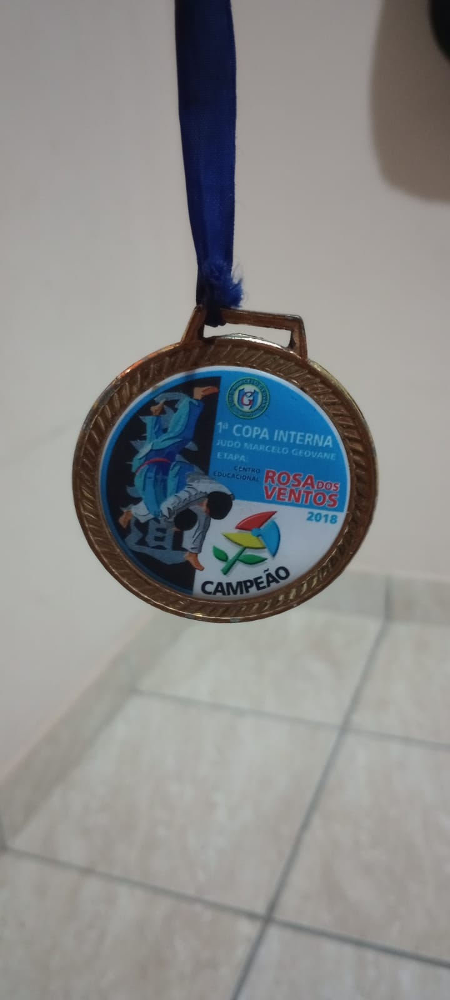

Comecei a lutar judo com 7 anos, durante minha trajetoria no esporte, participei de 3 campeonatos, aprendi as principais quedas, imobilizacoes, finalizacoes e cheguei ate a faixa cinza grau azul. Mesmo depois de ter parado de lutar, o judo ainda é minha arte marcial favorita.
